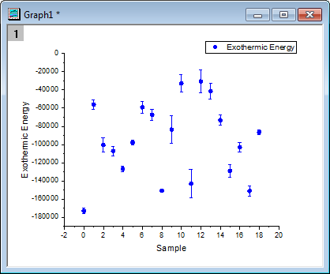
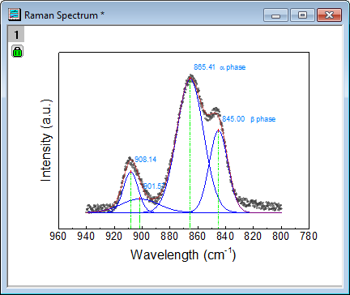
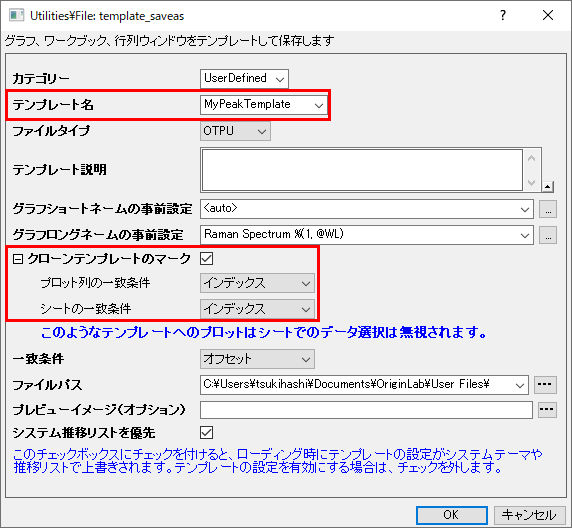
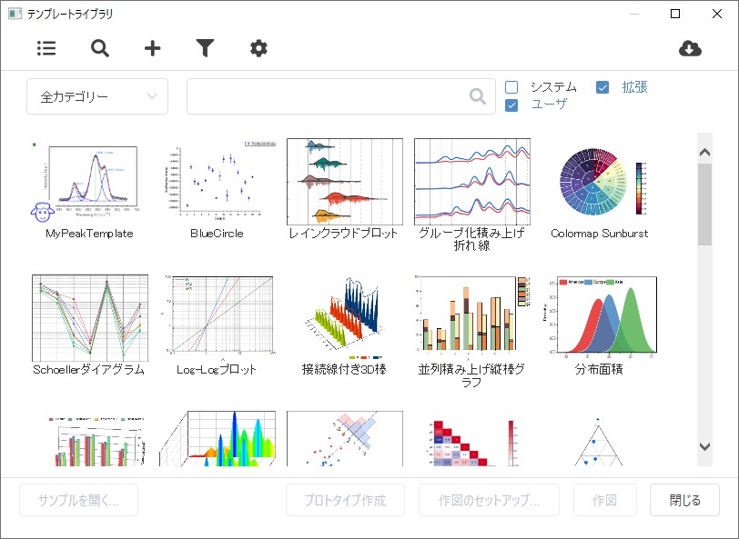

ユーザー定義グラフテンプレートからの作図
Plot-User-Template
概要
このチュートリアルでは、グラフをユーザ定義テンプレートとして保存し、保存したカスタムテンプレートを使って新しいデータをプロットする方法を紹介します。Originには、標準テンプレートとクローンテンプレートの2種類のグラフテンプレートがあります。クローンテンプレートは、グラフのデータ構成が複雑である場合も、新規のワークブック/ワークシートからグラフを簡単にクローン複製できますが、新規のデータは元のデータと同じ構成であることが前提となります。これと比較すると、標準テンプレートはデータソースに対し自由度がありますが、複雑なレイヤ階層やデータ構造を持つグラフを複製することができません。
このチュートリアルでは、以下の項目について解説します。
- 標準テンプレートとしてグラフを作成し、保存
- 標準テンプレートに新しいデータをプロット
- クローンテンプレートとしてグラフを保存
- 同じデータ構造のデータをクローンテンプレートにプロット
標準テンプレート
標準グラフテンプレートとして作成、保存
このチュートリアルは、チュートリアルデータプロジェクト（<Origin EXE フォルダ>\Samples\TutorialData.opj）と関連しています。
- Tutorial Data.opjを開き、Custom Axis Scale to Show Different Scale Range フォルダを開きます。
- 列BのExothermic EnergyとCのEnergy-SDを選択して、2Dグラフギャラリーツールバーの散布図ボタン
 をクリックし、エラーバー付きの散布図を作図します。
をクリックし、エラーバー付きの散布図を作図します。
- 次に、グラフ上のポイントのいづれかをダブルクリックし、作図の詳細（プロット属性）のダイアログを開き、シンボルを丸い青色に変更します。
- 左側パネルでLayer1の下にある、最初のプロットが選択されていることを確認します。シンボルタブを開きます。プレビューの下にある下向きに三角形ボタンから、塗りつぶし円を選択し、シンボルの色をカラーチューザーの単一色タブから青を選択します。OKをクリックします。
- 
- これを標準テンプレートとして保存します。Graph1のウィンドウタイトルバー上で右クリックし、テンプレートの新規保存を選択してダイアログを開きます。
- テンプレート名にBlueCircleと と入力して、テンプレート説明に青い塗りつぶし円のように入力します。
- 新規で作成したグラフにプロットのロングネームと同じグラフロングネームを付ける場合は、グラフロングネームの事前設定の隣にある、オプションボタンをクリックし、@LL:ロングネームを選択します。グラフロングネームの事前設定として、%(1,@LL)が入力されます。
- クローンテンプレートのマークのチェックが外れた状態で、OKをクリックして標準テンプレートとして保存します。
標準テンプレートに新しいデータをプロット
- ワークブックに戻り、Temperature と Temperature-SD を選択します。メニューの作図：マイテンプレート：BlueCircle(UserDefined)を選択してグラフを作成します。グラフウィンドウのロングネームはTemperature となります。

クローンテンプレート
クローンテンプレートとしてグラフを保存
- F11 キー、または ヘルプ：ラーニングセンター を選択して、ラーニングセンター ダイアログを開きます。左側のパネルからグラフサンプルを選択し、Ramanを探します。
- グラフをダブルクリックしてRaman Spectrumサブフォルダを開きます。
- Raman Spectrumグラフは、ワークブックPeak1のさまざまなシートのデータからプロットされ、データのラベル付けもされています。このような複雑な構成のグラフを標準テンプレートを使ってワンクリックで作図することはできません。そのため、このグラフはクローンテンプレートとして保存して、ワークブックPeak2のデータを使って作図します。
- 
- このためには、Raman Spectrumウィンドウのタイトルバーで右クリックし、テンプレートの新規保存を選択して、Utilities\File: template_saveasダイアログを開きます。
- テンプレート名としてMyPeakTemplate と入力します。グラフロングネームとして、Raman Spectrum + ワークブックロングネームのとなるように設定します。このためには、グラフロングネームの事前設定 の編集ボタンの隣にあるオプションボタンから、@WL:ブックロングネームを選択します。追加された%(1, @WL)の前にRaman Spectrum と入力します。
- クローンテンプレートとしてマーク のボックスにチェックを入れてこの項目を広げ、プロット列の一致条件 および シートの一致条件 をインデックスに設定して列とワークシートを一致させます。
- OKボタンをクリックしてダイアログを閉じ、テンプレートを保存します。
- 
クローンテンプレートを使ってグラフを作成
- タイトルがPeak2のワークブックを開き、作図：ユーザテンプレートに作図を選択してテンプレートライブラリを開きます。
- 
- 羊のアイコンが表示されているクローンテンプレートMyPeakTemplateをクリックして選択し、作図ボタンをクリックしてグラフをクローン複製します。

- もしくはワークブック Peak2 をアクティブにし、作図：マイテンプレート：MyPeakTemplate (UserDefined) を選択して、グラフを直接複製します。